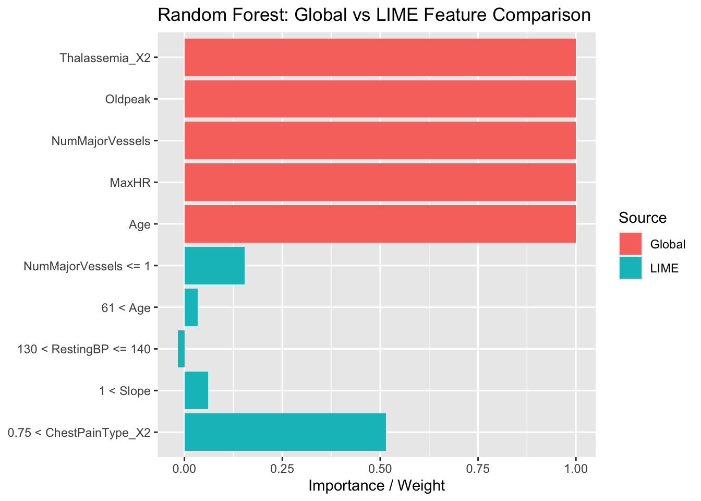

── Column specification ────────────────────────────────────────────────────────
Delimiter: ","
chr (3): model_type, feature, feature_desc
dbl (8): case, label, label_prob, model_r2, model_intercept, model_predictio...
lgl (2): data, prediction
ℹ Use `spec()` to retrieve the full column specification for this data.
ℹ Specify the column types or set `show_col_types = FALSE` to quiet this message.
Code
tree_compare <-bind_rows(tree_global, lime_tree)ggplot(tree_compare, aes(x =fct_reorder(Feature, as.numeric(Source =="Global")), y =ifelse(Source =="Global", 1, avg_weight), fill = Source)) +geom_col(position ="dodge") +coord_flip() +labs(title ="Decision Tree: Global vs LIME Feature Comparison", y ="Importance / Weight", x =NULL)
Rows: 25 Columns: 13
── Column specification ────────────────────────────────────────────────────────
Delimiter: ","
chr (3): model_type, feature, feature_desc
dbl (8): case, label, label_prob, model_r2, model_intercept, model_predictio...
lgl (2): data, prediction
ℹ Use `spec()` to retrieve the full column specification for this data.
ℹ Specify the column types or set `show_col_types = FALSE` to quiet this message.
Code
rf_compare <-bind_rows(rf_global, lime_rf)ggplot(rf_compare, aes(x =fct_reorder(Feature, as.numeric(Source =="Global")), y =ifelse(Source =="Global", 1, avg_weight), fill = Source)) +geom_col(position ="dodge") +coord_flip() +labs(title ="Random Forest: Global vs LIME Feature Comparison", y ="Importance / Weight", x =NULL)

10.1.3 3. Interpretability & Medical Trust
Model
LIME Support
Stability
Matches Global?
Medical Trust
Decision Tree
✅ Yes
High
Good
✅ Yes
Random Forest
✅ Yes
Moderate
Moderate
✅ Partial
SVM
❌ No
—
—
❌ No
Neural Network
❌ No
—
—
❌ No
Logistic Regression
✅ via IML
High
Excellent
✅ Yes
10.1.4 Conclusion
Models like Decision Tree and Logistic Regression offer strong interpretability and align well with their LIME/IML explanations.
Random Forest balances performance and explainability with moderate stability.
SVM and Neural Network performed reasonably but lacked interpretable support from LIME in our pipeline.
For medical settings, interpretable models with consistent explanations are recommended for building trust and transparency.